Now it's time to make delicious food from the ingredients you have gathered!
Below, you can press on the
ingredients you
have found to see which dishes you can make with exactly those.
Recipes with Juniper berries
Kombucha with juniper berries
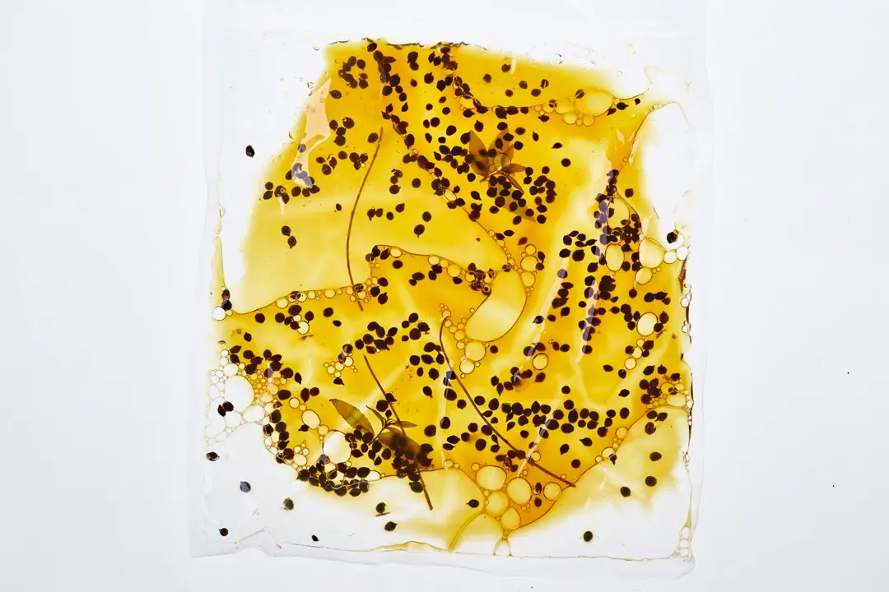
Beets with blueberries, juniper berries, and wood sorrel
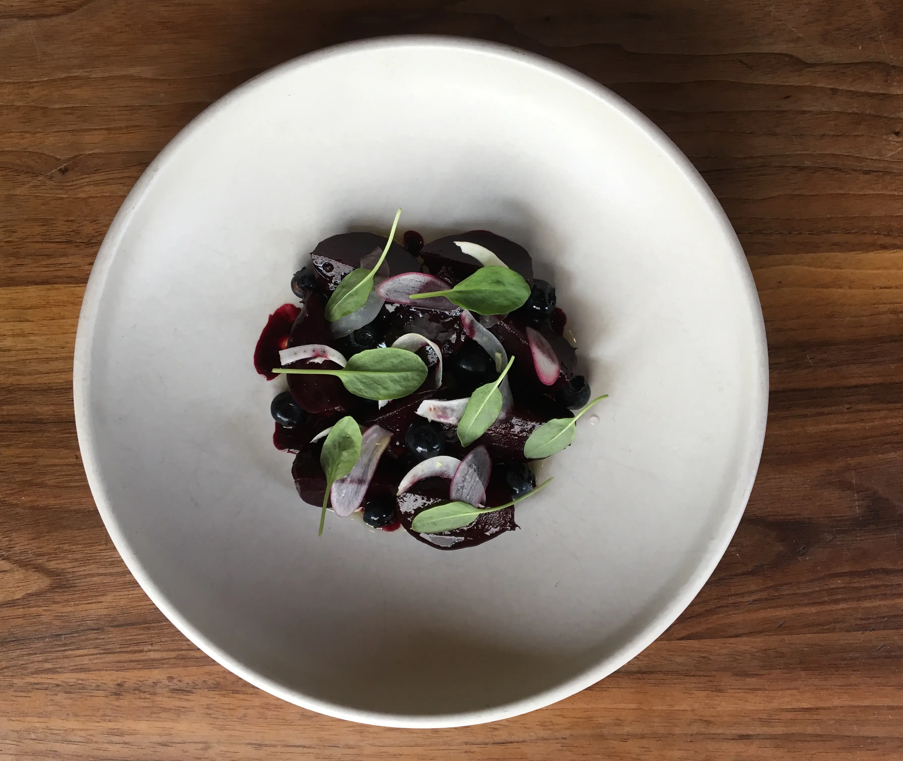
Recipes with Bladder Wrack
Pasta with seaweed and herbs
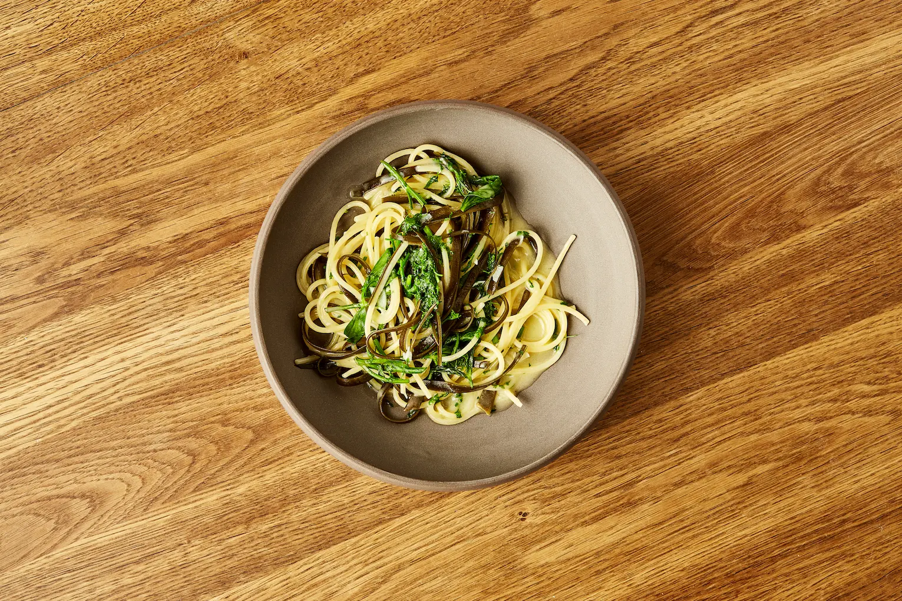
Fish and seafood cured in seaweed
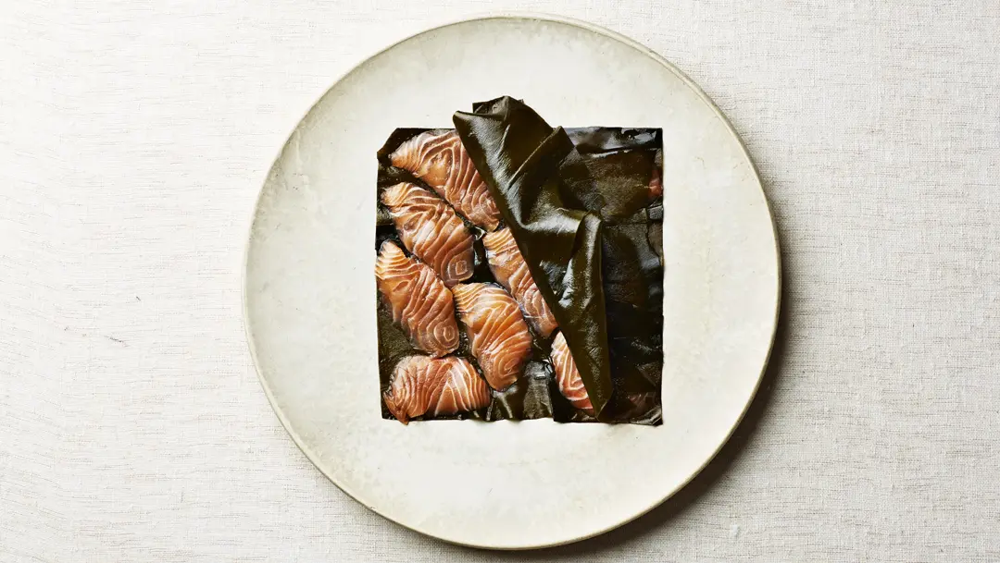
Recipes with Watercress
Green soup with herbs
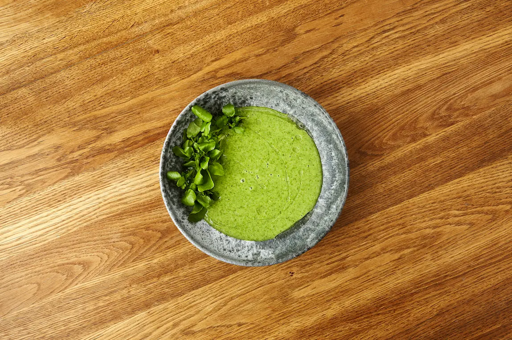
Stir fry with chanterelles, ginger, and soy sauce
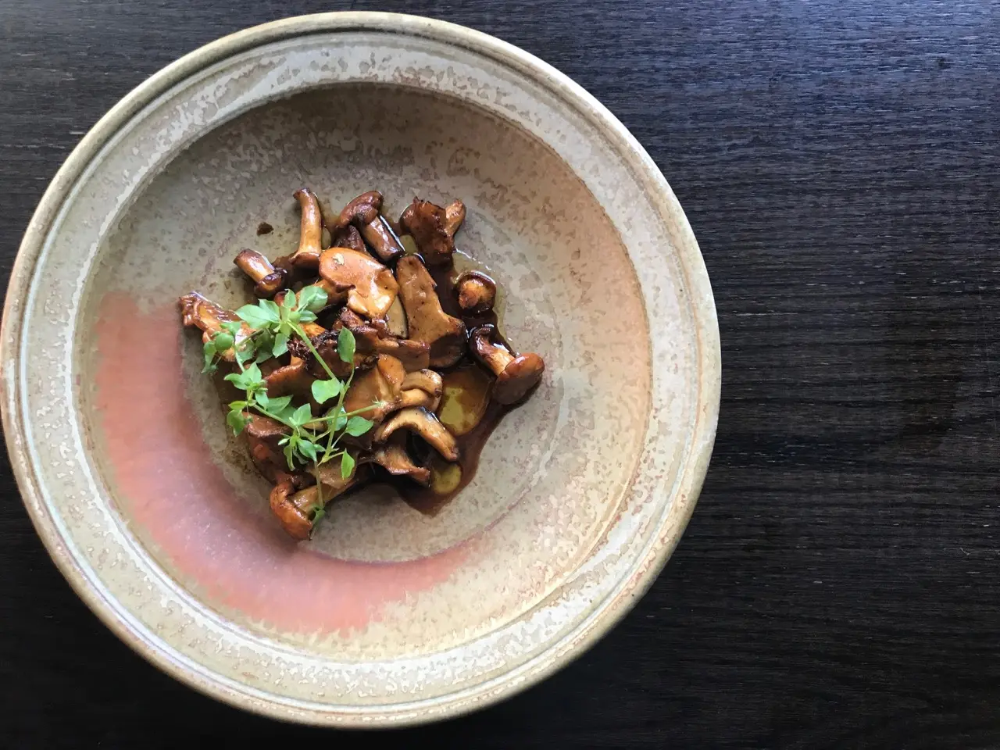
Recipes with Bulrush
Herb pesto with nuts
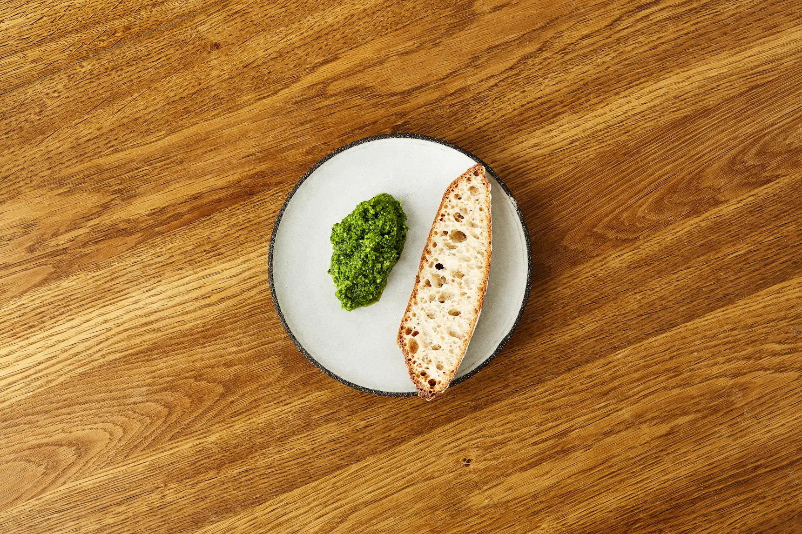
Recipes with Lungwort
Recipes with Garlic Mustard
Herb muffins with eggs and bacon
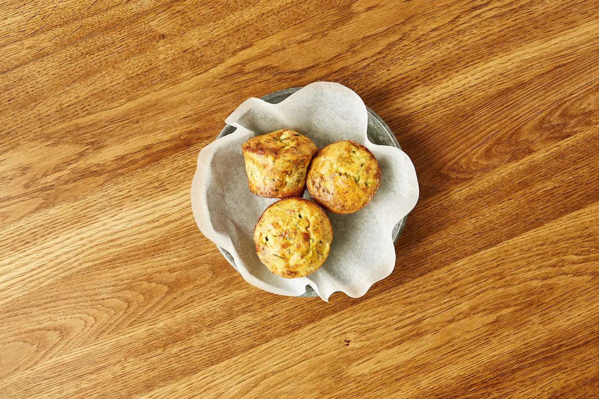
Ramson pesto
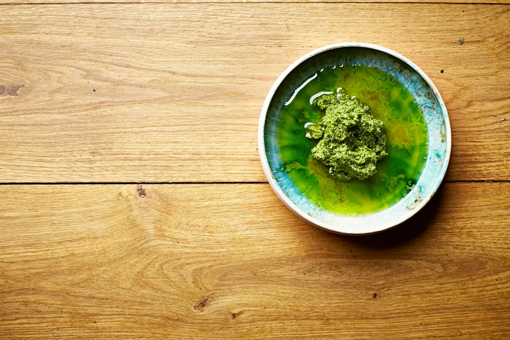
Recipes with Oyster Mushroom
Butter-fried mushroom bread
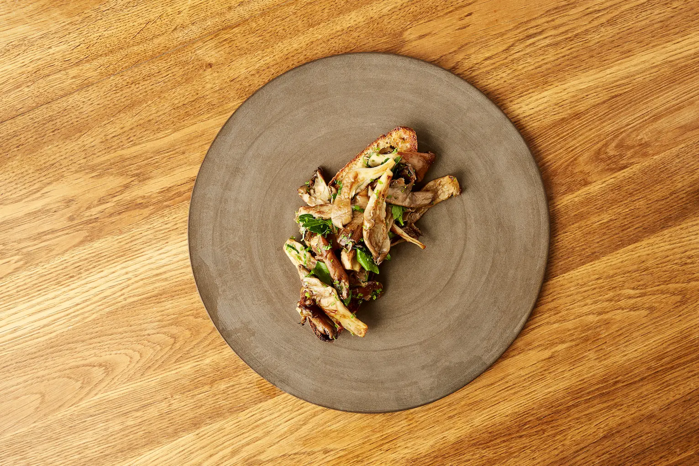
Breaded oyster mushrooms
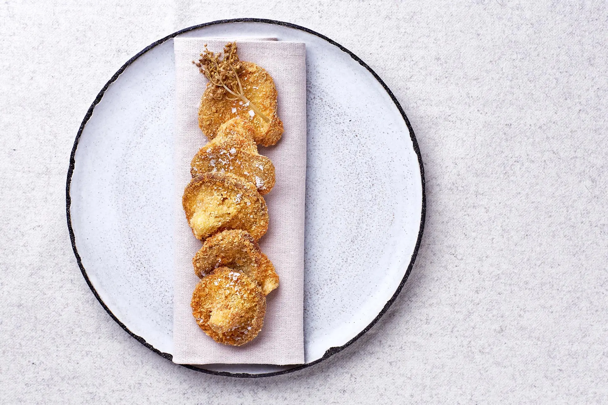
Recipes with Wild Garlic
Omelette with green herbs
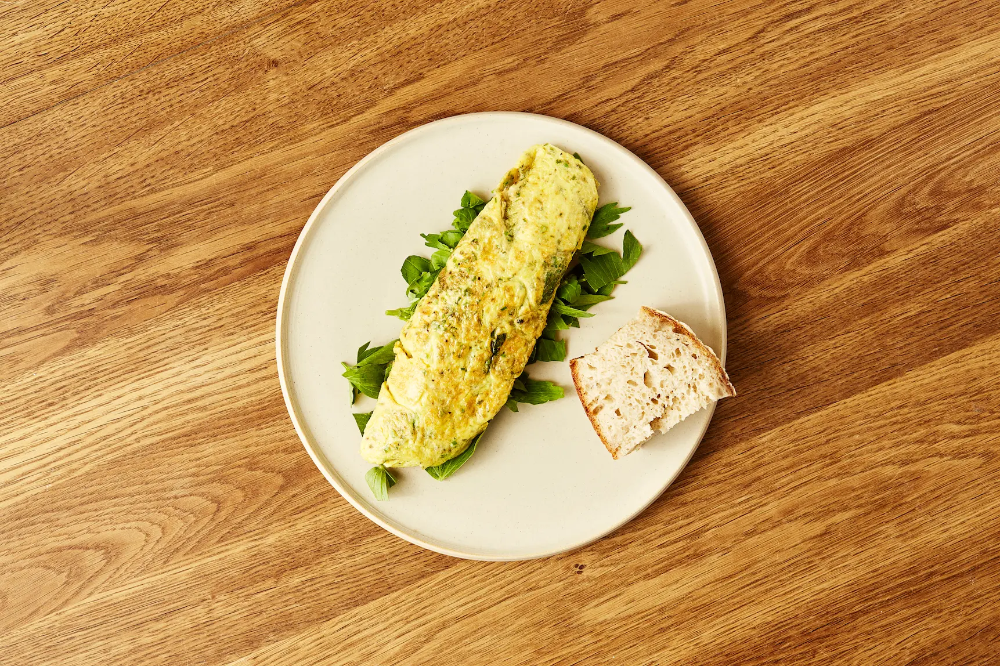
Ramson capers
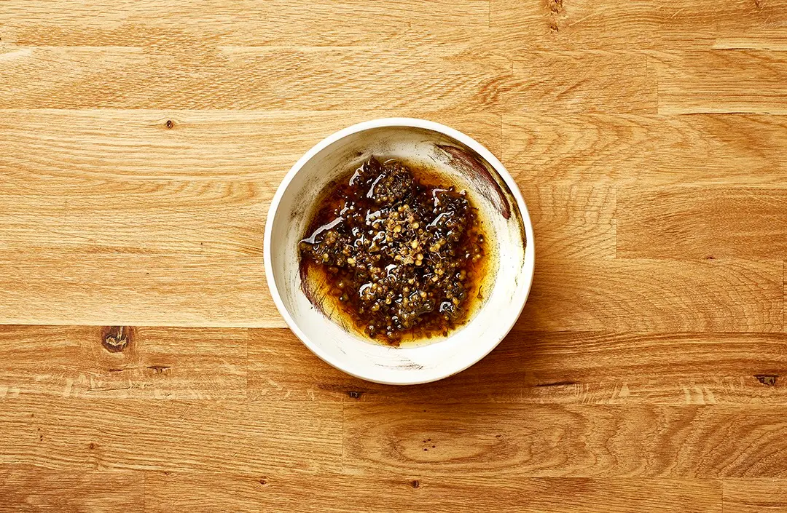